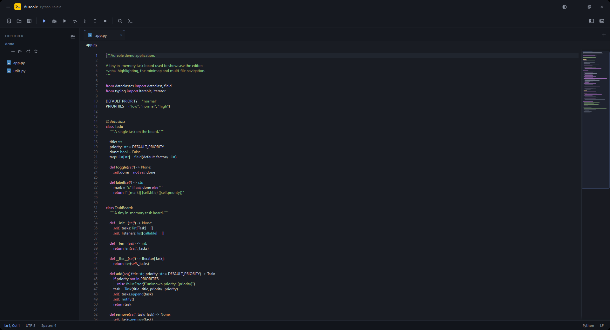

Tabs and a real file tree
Open a folder and the sidebar lists what is inside it. Ctrl+PageUp and Ctrl+PageDown move between open files.
Aureole is a native Windows editor built with Qt. One 14.4 MB setup file, no Electron layer, no account, no telemetry.

There is no extension marketplace to browse. These come with the install.
Open a folder and the sidebar lists what is inside it. Ctrl+PageUp and Ctrl+PageDown move between open files.
Saves the current file, then runs python -u on it in the built-in terminal. Shift+F5 stops the run.
F9 sets a breakpoint, F5 starts the debugger, F10 and F11 step over and into. The prompt stays visible.
Ctrl+` opens PowerShell in the folder you opened. Type there, or let the editor reuse it when you run a file.
Ctrl+F for find, Ctrl+H for replace, F3 for the next match. Ctrl+Enter replaces every match at once.
Arabic, Chinese, Japanese, Thai, Urdu and 36 more. Right-to-left layout is supported. Change it in Settings, then restart once.
Runs on 64-bit Windows 10 (1809 or newer) and Windows 11. The installer does not ask for administrator rights.
The build is not code-signed. If Windows says "Windows protected your PC", click More info, then Run anyway.
Sign in with GitHub to leave a note. Comments live in GitHub Discussions, not on this site.
Comments are not connected yet. Add the repository ID and category ID in assets/js/config.js to switch them on.